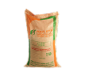

Fertilizer Guide
Fertilizer Category
Ratio
: Coconut APM (D)
: 12 : 06 : 32

How to Apply :-
- Fertilizer should be applied in a circular pattern, 1 foot away from the base of the plant in the first 1 – 1 ½ years.
- Distance of application from the base of the tree should gradually increase with growth.